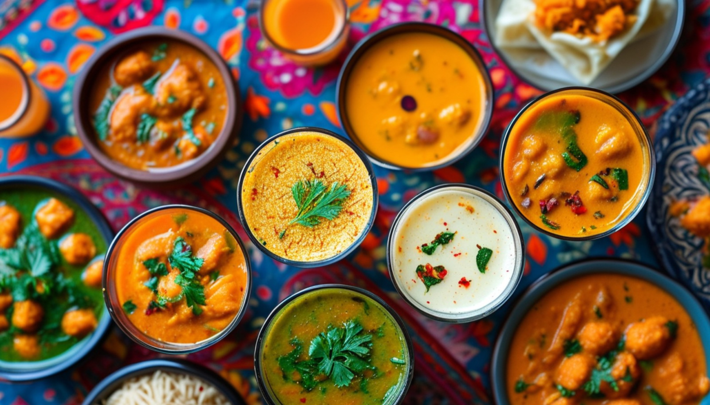

Explore

Hindi & Urdu for food
India doesn't have one cuisine. It has dozens. Here is a tour of the regional kitchens, the traditions and the history on every plate. Also, explore recipes based on ingredients and regional cuisines.
Tell us what is in your kitchen, and Khaana will help you cook an authentic Indian meal.
Search for recipes, regional guides, etc.
Every zone is clickable. Real culinary borders blur, blend, and overlap.
"Khaana" simply means food in Hindi and Urdu, and it stretches across every regional kitchen on this site. What lands on a plate in Amritsar shares almost nothing with what's served in Kochi, and a kitchen in Kolkata runs on its own logic, as does one in Ahmedabad. Climate, soil, trade routes, empires, and religion each left a mark on a different part of the subcontinent. The result is a patchwork of distinct traditions, each with its own staple grain, cooking fat and history.
Each page follows one region's food back to its roots, the geography that shaped it, the history that flavored it, and the dishes it is known for today.